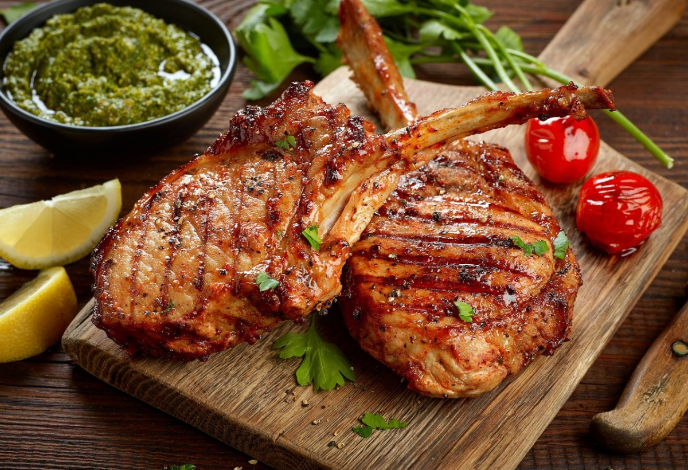

O prazer além do paladar
-

Massas
Venha apreciar a verdadeira culinária italiana em um ambiente típico e aconchegante
-
Frutos do Mar
Uma vida saudável, requer hábitos saudáveis, começando pela alimentação.O Restaurante Sangal, tem em seu cardápio diário, diversas opções de peixes e frutos do mar.
-

Carnes
Possuímos mais de 24 cortes de carnes
-
Entradas
Temos uma boa variedade de petiscos e entradas diferenciadas
-
sobremesas
Nossa cozinha elabora diversas sobremesas exclusivas!
-
Bebidas
Carta de vinhos nacionais e internacionais, coquetelaria e bebidas não alcóolicas.